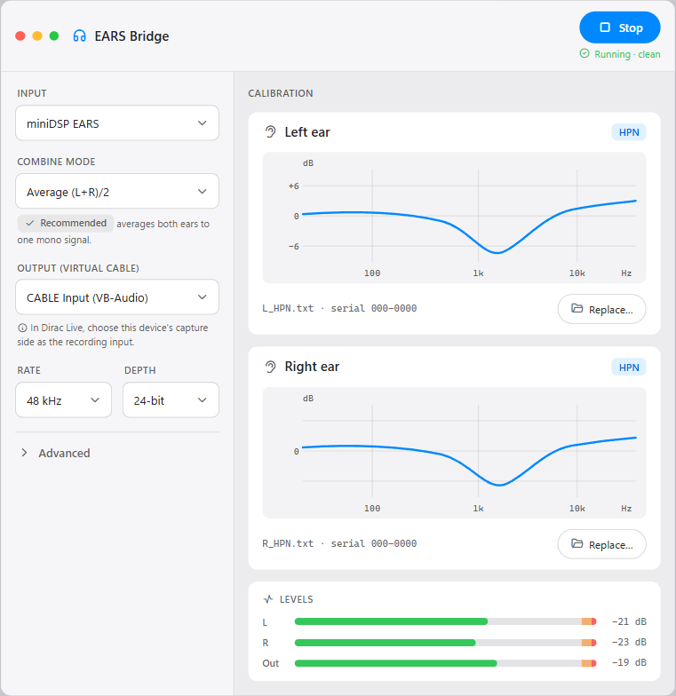
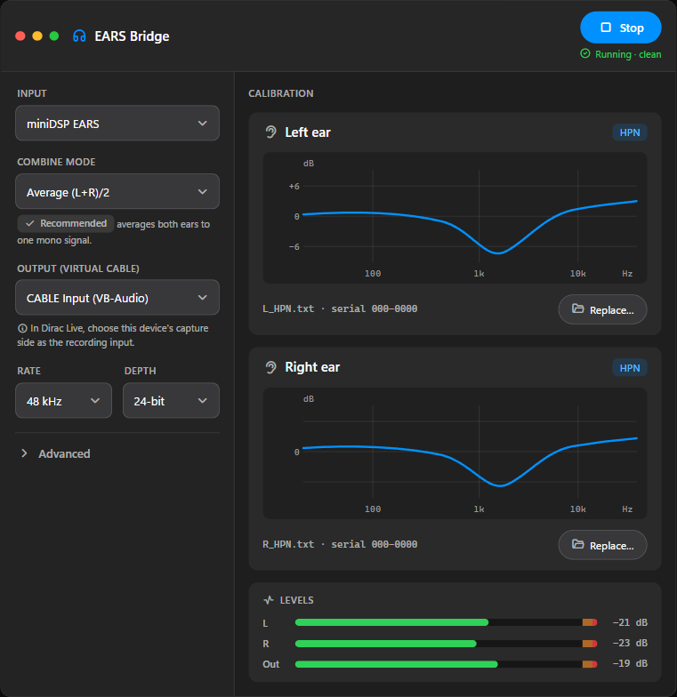

Measure your headphones with Dirac Live.
Dirac Live takes one calibrated microphone. A miniDSP EARS has two — one per ear. EARS Bridge sits between them: it applies each ear's calibration, combines the two channels to mono, and feeds that to a virtual audio device Dirac records from.


How it works
The capture and the virtual device run on independent clocks, so the path includes a lock-free, drift-correcting sample-rate converter. Each ear's correction is a minimum-phase FIR derived from its calibration file.
Two-channel mic capture
Per-ear cal → mono → SRC
VB-CABLE / BlackHole
One recording device
Features
Loads each capsule's FRD calibration as an inverse-correction FIR, so the EARS's own response is removed before Dirac ever sees it.
A lock-free asynchronous sample-rate converter keeps the two independent clocks in step over a full sweep — no dropouts, no slip.
Original EARS (48 kHz / 24-bit) and EARS Pro (44.1–192 kHz, 16/24/32-bit). FIR taps scale with the rate.
Live level meters and a clean-capture indicator catch dropouts and clipping so you only keep good measurements.
A self-contained installer on Windows and a universal disk image on macOS — built from one codebase.
The full source, design system, and build are public — inspect it, build it, or contribute on GitHub.
Download
You'll also need Dirac Live and a virtual audio device. Then run Dirac once per ear.
EARS-Bridge-Setup.exe (self-contained, no admin needed)..dmg and drag EARS Bridge to Applications (universal — Apple Silicon and Intel).xattr -dr com.apple.quarantine "/Applications/EARS Bridge.app".